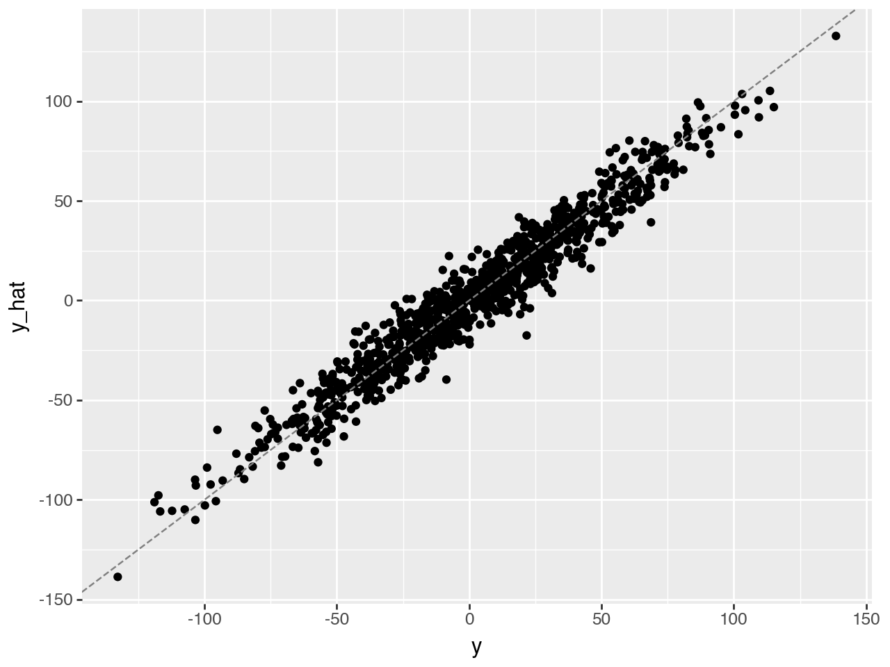
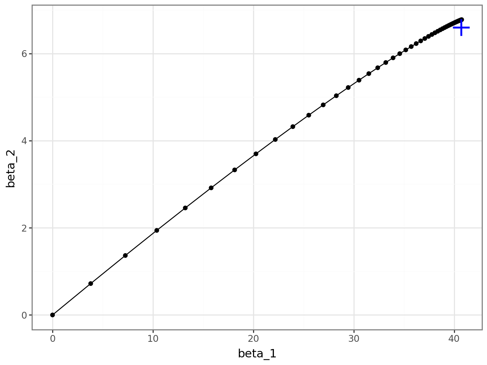
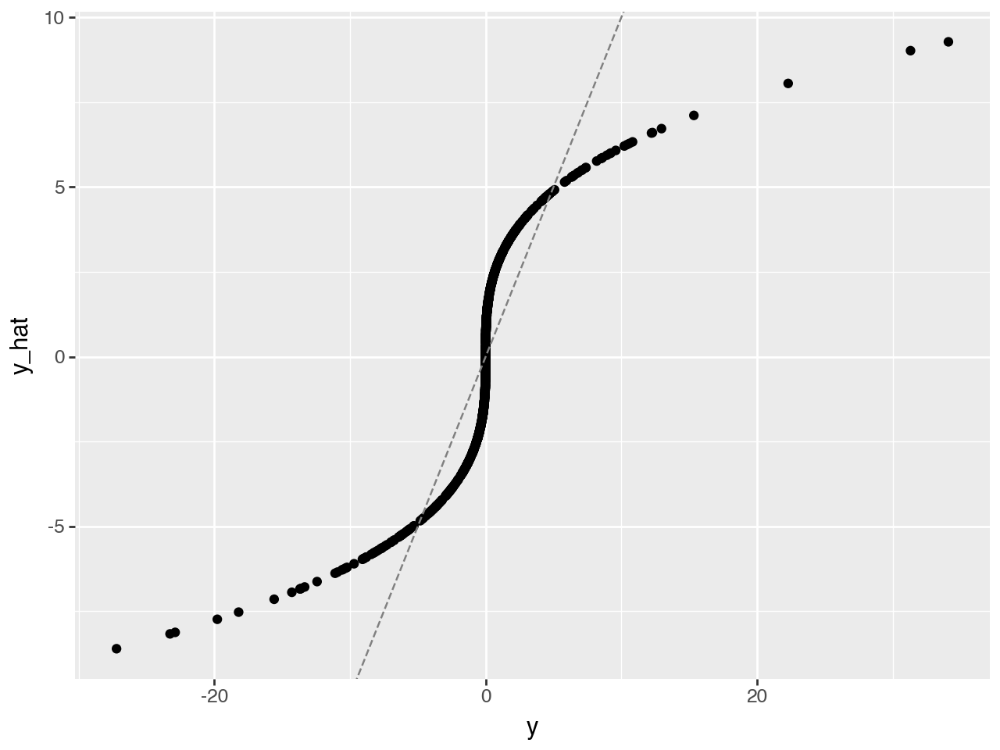
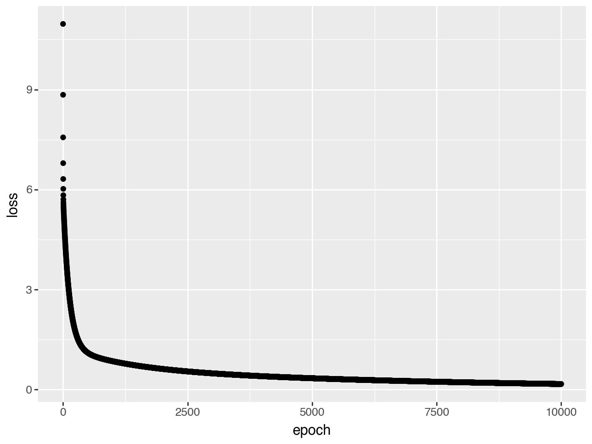
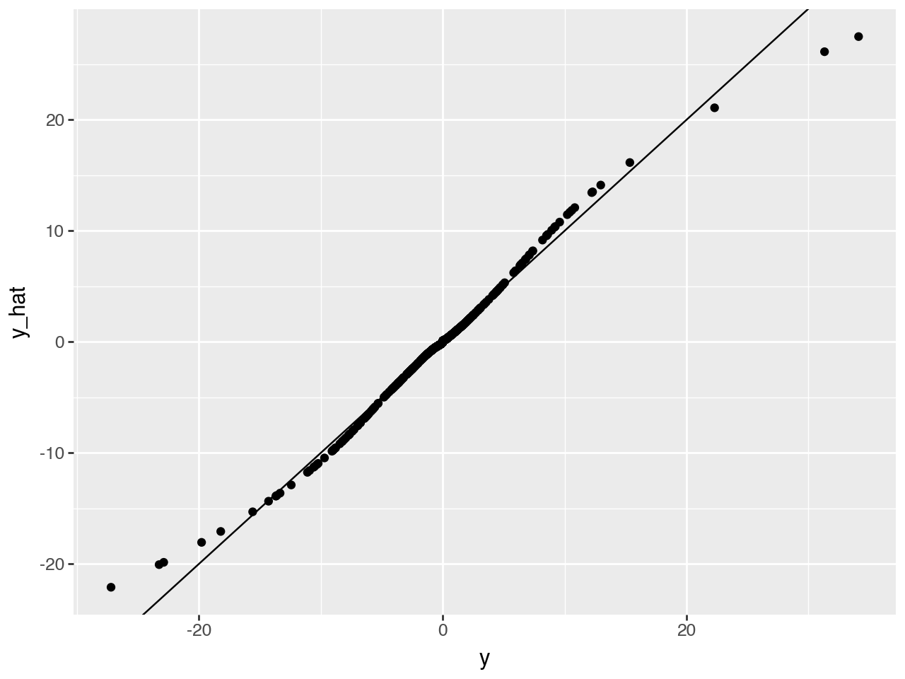

Show the code
## install packages if needed
if False:
%pip install scikit-learn plotnine tqdm pandasUnderstand and implement gradient descent to fit a linear model
Build and train a multi-layer perceptron (MLP) using PyTorch
Learn the basics of PyTorch, including model definition, forward pass, and optimization
We’ll start by making sure we have all the required Python packages installed and ready to go. PyTorch is the main library we’ll use for deep learning.
## install packages if needed
if False:
%pip install scikit-learn plotnine tqdm pandasfrom sklearn.datasets import make_regression
import numpy as np
from numpy.linalg import inv
from plotnine import qplot, ggplot, geom_point, geom_line, aes, geom_abline
from plotnine.themes import theme_bw
from plotnine.geoms import annotateThe linear model is the most commonly used model for regression problems. They follow this form:
\(y = X\beta + \epsilon\)
where \(\epsilon \sim N(0, \sigma)\)
Let’s simulate some data and fit a linear model from scratch.
We generate 1000 samples, each with 2 features. We’ll define the “true” coefficients and add a bit of noise to make it realistic.
np.random.seed(42)
bias = 0
noise = 10
x, y, coef = make_regression(
n_samples=1000,
n_features=2,
n_informative=2,
n_targets=1,
bias=bias,
noise=noise,
coef=True
)print('x.shape:', x.shape)
print('y.shape:', y.shape)
print('coef.shape:', coef.shape)x.shape: (1000, 2)
y.shape: (1000,)
coef.shape: (2,)print('x:\n',x,'\n')
print('y[0:10]:\n',y[0:10],'\n')
print('coef:\n',coef,'\n')x:
[[-0.16711808 0.14671369]
[-0.02090159 0.11732738]
[ 0.15041891 0.364961 ]
...
[ 0.30263547 -0.75427585]
[ 0.38193545 0.43004165]
[ 0.07736831 -0.8612842 ]]
y[0:10]:
[-14.99694989 -12.67808888 17.77545452 6.66146467 -14.19552996
-25.24484815 -39.23162627 -52.01803821 5.76368853 -50.11860295]
coef:
[40.71064891 6.60098441]
Since we know the true coefficients, we can directly compute the predicted y and visualize how well they fit.
y_hat = x.dot(coef) + bias(qplot(x=y, y=y_hat, geom="point", xlab="y", ylab="y_hat") + geom_abline(intercept=0, slope=1, color='gray', linetype='dashed'))
For linear regression, there’s a closed-form solution known as the normal equation:
\(\hat{\beta} = (X^T X)^{-1} X^T y\)
This gives us the optimal coefficients that minimize mean square errors.
Let’s get \(\hat{\beta}\) and compare it with the ground truth.
Derive the normal equation from the model, using matrix algebra
var = x.transpose().dot(x)
cov = x.transpose().dot(y)
b_hat = inv(var).dot(cov)print("Estimated")
print(b_hat)
print("Ground truth")
print(coef)Estimated
[41.06972678 6.79965716]
Ground truth
[40.71064891 6.60098441]Estimated coefficients using the normal equation are close to the true ones, despite noise. That’s a good sanity check.
When analytical solutions aren’t available (which is often), we rely on numerical optimization like gradient descent.
Although linear regression has analytical solutions, this is unfortunately not the case for many other models. We may need to resort to numerical approximations to find the optimal parameters. One of the most popular numerical optimizers is called stochastic gradient descent.
A gradient is the derivative of a function, and it tells us how to adjust parameters to reduce the error.
$f’() = _{→ 0} = $
An optimization algorithm that iteratively updates parameters in the direction of steepest descent (negative gradient) to minimize a loss function.
At a particular \(β_i\), we find the gradient \(f'(\beta)\), and take a step along the direction of the gradient to find the next point \(\beta_{i+1}\).
\(\beta_{i+1} = \beta_i - \alpha f'(\beta_i)\)
The \(\alpha\) is called the learning rate.

In real-world applications, the size of our dataset is so large that it is impossible to calculate the gradient using all data points. Therefore, we take a small chunk (called a “batch”) of the dataset to calcalate the gradient. This approximates the full-data gradients, thus the word stochastic.
To build a machine learning model, we need:
Common choice for regression: Mean Squared Error (MSE)
\(\ell(\beta) = \frac{1}{2}\sum\limits_{i=1}^m (f(\beta)^{i} - y^{i})^2 / m\)
\(\frac{\partial}{\partial \beta_j}\ell(\beta) = \frac{\partial}{\partial \beta_j} \frac{1}{2} \sum_i (f(\beta)^i - y^i)^2 = \sum_i (f(\beta)^i - y^i) x_j\)
Recall that in our example $ f() = = _1 x_1 + _2 x_2$. Here \(\beta_j\) is either \(\beta_1\) or \(\beta_2\).
Show that the derivative of the loss function is as stated above.
lr = 0.1 # learning rate
b = [0.0, 0.0] # initialize all betas to 0
n_examples = len(y)
trajectory = [b]
for _ in range(50): # 50 steps
diff = x.dot(b) - y
grad = diff.dot(x) / n_examples
b -= lr*grad
trajectory.append(b.copy())
trajectory = np.stack(trajectory, axis=1)qplot(x=trajectory[0], y=trajectory[1], xlab="beta_1", ylab="beta_2", geom=["point", "line"]) + theme_bw() + annotate(geom="point", x=coef[0], y=coef[1], size=8, color="blue",shape='+',stroke=1)
In this section, we learned
Let’s start by simulating data according to the generative model:
$ y = x_1^3$
x = np.random.normal(size=1000)
y = x ** 3Let’s try to predict with a simple linear regression model
$ y = X $
how many parameters do we need to estimate for this simple linear model?
lr = 0.1 # learning rate
b = 0.0 # initialize all betas to 0
n_examples = len(y)
for _ in range(50): # 50 steps
diff = x.dot(b) - y
grad = diff.dot(x) / n_examples
b -= lr*grady_hat = x.dot(b)
( qplot(x = y, y=y_hat, geom="point", xlab="y", ylab="y_hat") +
geom_abline(intercept=0, slope=1, color='gray', linetype='dashed') )

We would like to be closer to the dashed gray, identity line! Let’s try MLP.

This is screenshot from the tensorflow playground. It’s a great website to develop some intuition on how models learn with easily modifiable hyper parameters, data types, loss, activation, etc. Tensorflow is another deep learning framework developed by Google. In contrast, Pytorch was developed by Meta and is more commonly used in academic research.
Multi-Layer Perceptron (MLP) is a type of artificial neural network that consists of:
y = W₂((W₁x + b₁)) + b₂
Consider the MLP shown in the figure with:
Calculate the total number of parameters in this network by:
Hint: Remember that each connection between layers has a weight, and each node (except input nodes) has a bias term.
Manually calculating gradients and updating the parameters becomes tedious, so we use Pytorch
While we could manually implement gradient descent and backpropagation for our MLP, this would be:
PyTorch solves these challenges by providing:
In this section, we’ll build a simple PyTorch model to predict y from x, demonstrating how these features make deep learning more accessible and efficient. Let’s start by defining our model architecture: a neural network with one hidden layer containing three nodes.
## install packages if needed
if False: # Change to True to run the commands
%pip install tqdm
%pip install torch
%pip install torchvision torchmetricsimport torch
print(torch.__version__)
## if on a mac check if mps is available so you use gpu
## print(torch.backends.mps.is_available())2.6.0import torch
from torch import nn
import torch.nn.functional as F
#device = torch.device("cuda")
device = torch.device("mps") ## use this line instead of the one above withb cuda
class MLP(nn.Module):
def __init__(self, input_dim, hid_dim, output_dim):
super().__init__()
self.fc1 = nn.Linear(input_dim, hid_dim)
self.fc2 = nn.Linear(hid_dim, output_dim)
def forward(self, x):
x = F.relu(self.fc1(x))
y = self.fc2(x)
return y.squeeze(1)
mlp = MLP(input_dim=1, hid_dim=1024, output_dim=1).to(device)We are now ready to train our model. To understand how our model is doing, we record the loss vs step, which is called the learning curve in ML literature.
x_tensor = torch.Tensor(x).unsqueeze(1).to(device)
y_tensor = torch.Tensor(y).to(device)
learning_curve = []
for epoch in range(10000):
optimizer.zero_grad()
y_hat = mlp(x_tensor)
loss = loss_fn(y_hat, y_tensor)
learning_curve.append(loss.item())
loss.backward()
optimizer.step()qplot(x=range(10000), y=learning_curve, xlab="epoch", ylab="loss")
y_hat = mlp(x_tensor)
y_hat = y_hat.detach().cpu().numpy()
#qplot(x=y, y=y_hat, geom="point", xlab="y", ylab="y_hat")
qplot(x=y, y=y_hat, geom=["point", "abline"],
xlab="y", ylab="y_hat",
abline=dict(slope=1, intercept=0, color='red', linetype='dashed'))
Now this looks much better!
The Universal Approximation Theorem states that a neural network with 1 hidden layer can approximate any continuous function for inputs within a specific range.
We won’t go into details here but check out this post if you are interested: http://neuralnetworksanddeeplearning.com/chap4.html
In this section, we learned the following things: